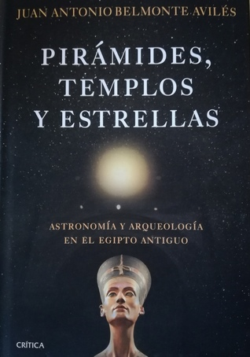

Pirámides, templos y estrellas. Astronomía y arqueología en el Egipto antiguo
Reseña por Jorge I. Zuluaga

Ver reseña en GoodReads (necesita cuenta)
Juan Antonio Belmonte es, sin lugar a dudas, una de las mayores autoridades vivas en la astronomía del antiguo Egipto. Ese prestigio se lo ha ganado a pulso, como es evidente después de leer (¿o sufrir?) su libro, gracias a lo que, para hoy, serían más de 20 años de investigaciones de astronomía cultural del antiguo Egipto (o arqueoastronomía) realizadas en el mismísimo "lugar de los hechos". Bueno, o al menos así lo relata el autor en "Pirámides, templos y estrellas": este astrofísico español parece haberse "pateado" casi todo Egipto en busca de claves para desvelar los secretos bien guardados de la astronomía del país de las dos tierras. ¡Y sí que lo ha conseguido! (pero qué duro es recorrer las 400 páginas de este libro para darse cuenta).
El libro se presenta como una síntesis de sus investigaciones arqueoastronómicas (especialmente las comprendidas entre principios de este siglo y el año 2011) realizadas por el autor y sus colaboradores, no solo en Egipto, sino también en Anatolia, la antigua tierra del otrora poderoso imperio hitita, coetáneo del Egipto faraónico al menos durante el Reino Nuevo (finales del segundo milenio antes de la era común). El autor incluso dedica un capítulo de este libro a la astronomía hitita (capítulo que ciertamente parece fuera de lugar o, al menos, así lo leí yo).
El primer pecado del libro es precisamente ser una síntesis de sus trabajos de investigación, en lugar de una "interpretación" elaborada para un público muy amplio. El profesor Belmonte prácticamente vuelca el contenido de sus trabajos académicos en el libro (como científico juraría que muchos de los apartes del texto son reelaboraciones de *papers* o documentos académicos presentados en revistas, congresos o libros técnicos). Esto no está mal (espero que si el profesor Belmonte, a quien admiro profundamente, y sus colaboradores llegan a leer algún día esta reseña, no me malinterpreten este comentario particular y toda la reseña en general). Es difícil deshacerse de ese bagaje para escribir cualquier libro nuevo. Casi todos los académicos lo hacemos. Pero este libro se vende como un texto divulgativo, dirigido a un público más amplio. Su contenido, sin embargo, está más dirigido a expertos o estudiosos del tema que a lectores casuales.
El hecho de que el "código" en el que está escrito el libro sea precisamente el "código académico" hace que muchos apartes sean prácticamente ilegibles para el no experto (astrónomo o egiptólogo). En más de una ocasión me vi envuelto en párrafos tan intrincados que estoy seguro de que me tomará bastante tiempo lograr capturar los detalles al estudiar nuevamente el texto (porque estoy interesado en hacerlo).
Este es mi segundo libro completo sobre la astronomía egipcia (el primero fue el excelente, pero no menos académico, texto del profesor José Lull, "La Astronomía en el Antiguo Egipto" - mi reseña por aquí). Si bien "Pirámides, templos y estrellas" fue escrito por un colega (y por ello pensé que lo disfrutaría más), encontré el libro del profesor Lull un poco más entretenido (sin que me faltara también superar uno que otro escollo en su lectura); un libro sinceramente más recomendable para el aficionado.
Pero todo parece demasiado negativo. ¿Tiene algo bueno el libro?
¡Pues casi todo! (solo que no es asequible para el lector desprevenido). Recuerden que estamos leyendo la síntesis del trabajo de uno de los más reconocidos expertos en la astronomía egipcia. No podría esperarse menos. Déjenme ahora describirles las cosas buenas que me encontré (y que espero que ustedes, aún después de esta primera mitad de reseña tan decepcionante, encuentren) leyendo el libro del profesor Belmonte.
Lo primero es que, a diferencia de lo que comenté en la reseña del libro del profesor Lull, Juan Antonio sí que está convencido de que podemos identificar la mayor parte de las "constelaciones" egipcias y los decanos asociados (grupos de estrellas usados para medir el tiempo en la noche y a lo largo del año) con estrellas, grupos de estrellas, cúmulos estelares y hasta galaxias identificados en la tradición mesopotámica, griega y, en general, de Occidente. ¡Genial! (aunque, como ha sucedido en la mayor parte de la historia de la arqueoastronomía egipcia, no se puede decir tampoco la última palabra).
El libro contiene sugerentes teorías que no vi en el libro del profesor Lull sobre aspectos de la astronomía egipcia, de sus descubrimientos sobre el cielo y de la relación de la astronomía y el paisaje, que me parecieron geniales. Dos en particular llaman la atención. La primera es la teoría (aparentemente original del profesor Belmonte y de sus colaboradores) de cómo habrían los egipcios descubierto la duración del año civil, usando la increíble coincidencia de que la latitud de la ciudad de Asuán (la Siena griega) fuera casi exactamente igual a la inclinación del eje de rotación de la Tierra alrededor de la época en la que supuestamente se habría inventado el calendario egipcio. La segunda tiene que ver con la posible razón astronómica para que los egipcios fundaran grandes ciudades y erigieran grandes templos en ciertos lugares de la ribera del Nilo (Tebas, Pi-Ramsés, Amarna, etc.). ¡Qué buenas ideas! (y no son las únicas).
Una de las características del lenguaje del libro es justamente el tono de seguridad con el que se presentan algunos resultados; un tono que, paradójicamente, caracteriza la literatura científica (es como si los científicos dijéramos: "si planteo esta idea como si fuera dudosa, los revisores o los lectores pensarían que mi trabajo es menos relevante"; bueno, o al menos yo lo siento así). Esto confirma mi juicio presentado un poco antes de que el libro es posiblemente una colección de versiones adaptadas de textos académicos. También puede ser que así se sienta genuinamente el profesor Belmonte (aunque para mí, si ese es el caso, el tono es un poco arrogante).
El capítulo dedicado a la astronomía hitita y nubia es sencillamente prescindible (o ameritaría un libro aparte). Si bien las razones científicas para incluirlo son válidas —confirmar que los métodos usados para investigar las orientaciones de los templos egipcios y su significado astronómico aplican también en los países de Hatti y Kush—, el capítulo constituye una ruptura demasiado abrupta del hilo conductor del libro, que, al fin y al cabo, debería restringirse a Egipto.
El capítulo más especial de todos, y espero que los que se animen a leer el libro a pesar de haber insistido aquí en desanimarlos lo hagan, es el denominado "Epílogo", que de epílogo no tiene sino el nombre.
En este aparte del libro (que tampoco está muy relacionado con el resto, aunque naturalmente la cronología egipcia, en la que el autor es un experto aplicando métodos astronómicos, es importante en el capítulo), el autor se dedica (en casi 50 páginas) a describir los que llamaré aquí "misterios genealógicos" de la familia del faraón hereje, Ajenatón. ¡Y qué misterios! El capítulo amerita también por sí solo un libro completo (que espero el profesor Belmonte se anime a escribir algún día). Para todos los apasionados por el antiguo Egipto, hay que leer (o estudiar, porque está en el código muy difícil del resto del libro) este capítulo con sumo cuidado. Para no arruinarles ninguna sorpresa, solo les digo que bien podría tratarse de la trama de uno de los capítulos de Sherlock Holmes o de un libro de Agatha Christie.
Una última cosa: el libro está excelentemente bien escrito. A pesar de la complejidad académica del texto, las frases son claras y el español utilizado es bastante elegante. Toda mi admiración por un científico, especialmente de una ciencia como la astronomía, que escriba textos de esta factura.
A mí me espera una buena releída con lápiz y computador a la mano. A los que solo quieren pasar una buena tarde leyendo sobre Egipto, tal vez sea mejor que busquen otros libros.